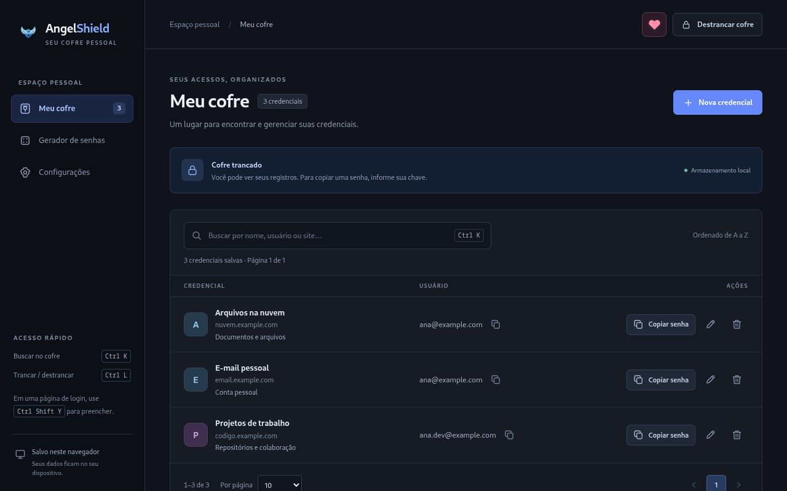

Encontre o que precisa
Guarde usuário, senha, site e observações. Use a busca para encontrar uma credencial e copie os dados quando precisar.
EXTENSÃO PARA CHROME
Um lugar para organizar seus acessos, gerar senhas e preencher logins. Seu cofre fica no navegador. O backup no Google Drive é opcional e acontece quando você escolher.
Cofre local Backup manual Sem publicidade

DO CADASTRO AO LOGIN
As ferramentas do dia a dia, em um espaço pessoal no navegador.
Guarde usuário, senha, site e observações. Use a busca para encontrar uma credencial e copie os dados quando precisar.
Escolha o tamanho e os tipos de caracteres. Gere uma senha e use o resultado ao criar ou atualizar uma credencial.
Na página de login, escolha a credencial para preencher os campos. O AngelShield também pode oferecer o salvamento de um acesso.
BACKUP NA NUVEM, POR ESCOLHA
Conecte sua conta Google nas configurações da extensão para guardar versões do cofre em uma pasta do seu Drive.
Importações e exportações são manuais. Você escolhe a versão e confirma cada alteração; se houver conflito, pode revisar as diferenças antes de decidir.
Entenda o uso do Google DriveA integração é opcional e depende da sua configuração e autorização.
Exporte um backup com número e data para a pasta escolhida no Drive.
Consulte o histórico, escolha uma cópia e confirme o que será atualizado.
TRANSPARÊNCIA SOBRE SEUS DADOS
As senhas dos registros são criptografadas com a chave informada por você. O cofre e suas configurações ficam no armazenamento da extensão neste navegador.
Você também pode importar e exportar registros por CSV. A política explica quais dados são tratados, como funcionam os backups e como controlar ou excluir suas informações.
Ler a política de privacidadeSUPORTE
Fale com o desenvolvedor pelo canal do projeto no GitHub.